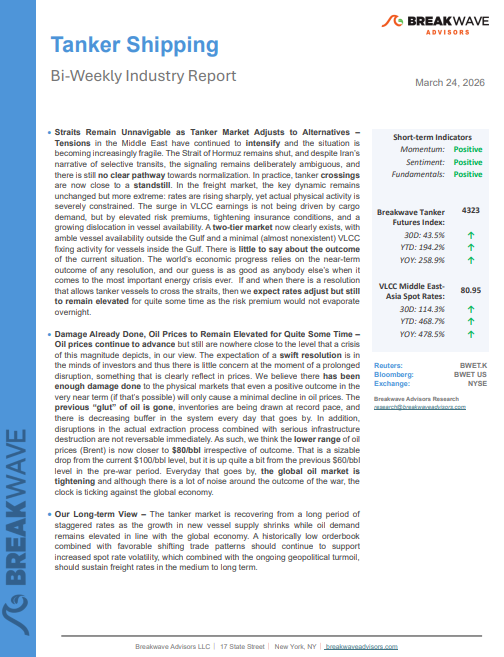
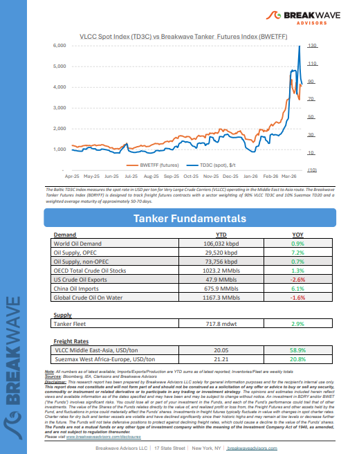
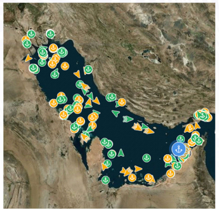

Welcome toBreakwave AdvisorsWeekend Read
As the week comes to a close, take a moment to review the key insights from the past few days. Missed something? We've gathered all the top insights for you to catch up at your convenience.
Breakwave Shipping Report
Straits Remain Unnavigable as Tanker Market Adjusts to Alternatives–Tensionsin the Middle East have continued tointensifyand the situation is becoming increasingly fragile.


Insights Of The Week
The global economic landscape
The global economic landscape has undergone a profound transformation over the past five years, shaped by a succession of defining phases that have fundamentally altered market dynamics, policy direction, and trade behaviour.
Doric Weekly Market Insights
Upstream Under Attack
The past few days have seen the conflict extend beyond chokepoint disruption into direct strikes on production and refining infrastructure across the Gulf.
Gibson Tanker Market Report
Asian crude shortage propels Afra and S’max to new highs in the Atlantic - VLCCs should benefit soon
Aframaxes in the all-important US Gulf load region leapt to W700 for voyages to Europe yesterday..
Braemar Research


According to AXSMarine data, a total of 338 bulkers has been recorded in the Middle East Gulf.
BRS Weekly Dry Bulk Newsletter
A system under stress
Record crude accumulation and a historic shift in ballast–laden ratios signal deepening supply disruption in the Gulf.
Xclusiv Shipbrokers Weekly Report
Strait of Hormuz Update
Selective Transit, Elevated Costs, and Persistent Attack Risk
Allied Weekly Report
The LNG carrier market
While the global gas market was preparing for a substantial increase in natural gas supply in the next years, driven by new liquefaction projects expected to come online,
Intermodal Weekly Market Report
The war in Iran will have knock-on effects for the steel markets in the upcoming months
Seaborne steel flows reached 21.1mt in February 2026, up less than 1% from the same period last year.
Signal Ocean Commodity Radar
Tailwind For Chinese Coal Imports
As we discussed in Commodore Research's most recent Weekly Executive Report, China’s coal production averaged 381.5 million tons in January/February.
From Commodore's Weekly Dry Bulk Reports
Oil rallies as US-Iran negotiations fail
Energy markets rallied as the prospect of peace talks diminished. Precious metals dropped sharply amid ongoing inflationary concerns. Industrial metals were mixed.
Commodities Wrap